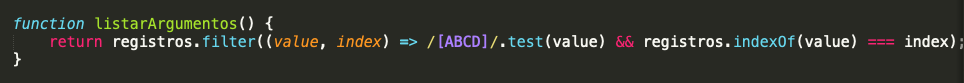
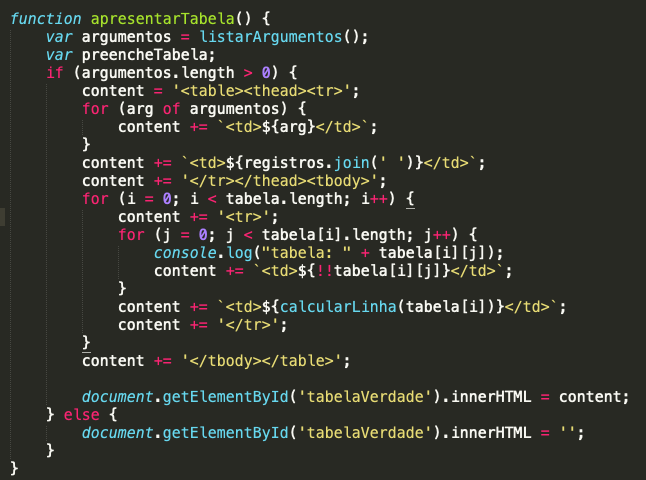
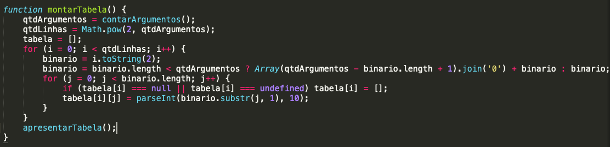

Nós, alunos da UCDB, fizemos um projeto da matéria de Matematica Discreta, onde fizemos uma calculadora digital de tabela verdade, para auxiliar todos quando for necessaria, por isso fizemos em um formato web, onde pode ser acessada em qualquer dispositivo(smartphones, tablets, computadores) com qualquer sistema, ja que fizemos um site responsivo utilizando o framework web chamado de Bootstrap.
O Site todo, foi estruturado em HTMl5, e utilizando CSS3 para fazer sua estilização. Para fazer a calculadora realmente funcional utilizamos a linguagem de programação JavaScript.
Tivemos como ideia utilizar a inteligencia do javascript e converter seus valores para calcular se uma expressão é verdadeira ou falsa, abaixo explicaremos melhor.
Tabela verdade é um dispositivo utilizado no estudo da lógica matemática. Com o uso desta tabela é possível definir o valor lógico de uma proposição, isto é, saber quando uma sentença é verdadeira ou falsa.
Em lógica, as proposições representam pensamentos completos e indicam afirmações de fatos ou ideias.
Utiliza-se a tabela verdade em proposições compostas, ou seja, sentenças formadas por proposições simples, sendo que o resultado do valor lógico depende apenas do valor de cada proposição.
Agora que ja explicamos brevemente o que é uma tabela verdade e falamos um pouco sobre o projeto, iremos dar uma explicada rapida de como utilizar nossa calculadora.
Os botões com valores A,B,C e D representam os argumentos do problema, ou seja você ira utiliza-los como se fossem "π é um número racional" ou "joao come banana". Ao clicar nos botões eles irão aparecer no visor que fica no topo da calculadora.
Depois de adicionar algum argumento esta na hora de adicionar os conectores lógicos, que podem ser:
Os botões que abrem e fecham parenteses, funcionam igual na amtematica, servem para dar ordem de preferencia.
O botão Limpar serve para apagar tudo e recomeçar do zero, o botçao DEL serve para apagar apenas o ultimo caractere.
Kevin: Idealização e desenvolvimento inicial do programa em C++ em sua maior parte, com parte das funções feitas por outros membros do grupo, além de algumas poucas funções após o transferimento do programa de C++ para javascript no meio do desenvolvimento
Beatriz: Pesquisa de comandos e afins úteis para o auxílio do desenvolvimento do programa, também criando algumas funções no estágio inicial do desenvolvimento em C++

Roberto: Adaptação do programa para javascript, criação da estrutura html do site, fez a primeira versão do script em javascript no qual não estava 100% funcional. Depois da primeira correção de professor Hemerson Pistori, dei uma pequena refatorada no código e mudei o desigin do site.
Edy: Fez a parte de entradas da tabela, além as operações especiais do programa
Eduardo: Responsável pela otimização do código, fazendo uma refatoração do código, o deixando 100% funcional
A estrutura visual do projeto foi desenvolvida em 3 arquivos:
A estilização do visual do projeto foi desenvolvido em 1 arquivo:
A estruturação do código em que deixa a tabela funcional foi em 1 arquivo:
A primeira função que vemos em nosso script é a listarArgumentos() , ela é simples porem como todas as outras é crucial pro código. Ela pega a string digitada pelo usuario, por exemplo: A.B e deixa somente os argumentos, ficando assim AB
A segunda função é a contarArgumentos(), a funcionalidade dela também é bem simples, simplesmente chama a primeira função e conta o numero de argumentos que foram separados da string original. Utilizando esse numero depois para fazer o numero de linhas que a tabela deve ter.
A terceira função é a apresentarTabela(), essa função é o coração do script, já que ela vai montar a tabela em nossa estrutura html. Podemos ver que ela chama a função listarArgumentos() e coloca seu valor dentro de uma variavel.Utilizando-se de um loop em for ela preenche a tabela com todas suas possibilidades(true, false) em cada linha. No final desse loop ela chama a função calcularLinha(linha), que ja explicaremos em um instante. Ao final da função ela se utiliza de uma função javascript innerHTML que coloca um conteudo em uma pagina html, a função sabe exatamente onde colocar a tabela pegando uma estrutura por seu ID, no nosso caso, o ID tabelaVerdade.
A proxima função que passaremos por cima é a montarTabela(), é ela que vai dizer se deve ser colocado true ou false na tabela, ela é como se fosse o que acontece por tras da função apresentarTabela().
Agora iremos pra função registroParaInput(), ela pega a string digitada pelo usuario, no nosso exemplo: A.B e levara para a função montarTabela().
Agora irei explicar 3 funções bem pequenas nesse paragrafo. Primeiro iremos falar da função input(e), ela é realmente em simples, ela vai precisa de um evento para acontecer, e pegara o valor da string digitada pelo usuario e chamara a registroParaInput(). A segunda função é a apagar(), ela simplesmente apaga o ultimo caractere digitado pelo usuario caso ele queira trocar algo. A terceira função dessa sessão é limpar(), ela limpa tudo digitado pelo usuario para que ele possa começar do zero.
Uma outra função importantissima para o programa é a converterParaExpressao(), ela é grande porém bem simples, ela pega a string digitada pelo usuario e "traduz" para linguagem de maquina, ou seja, se nós utilizamos . para ser um AND, em JavaScript utilizamos &&. Então nós traduzimos cada uma das opções dadas para o usuario. Que são:
| Conectivo | Símbolo | Operador lógico |
|---|---|---|
| NOT | ~ | ! |
| AND | . | && |
| OR | v | || |
| Bicondicional | <-|-> | == |
| XOR | ⊻ | ^ |
| NOR | ↓ | !((${valor1}) || ${valor2}) |
| NAND | ↑ | !((${valor1}) && ${valor2}) |
Gostaria de dar a devida atenção as funções XOR, NOR e NAND, já que elas foram as mais dificeis de "traduzir" já que elas não existem por natureza no javascript. Depois de muita pesquisa conseguimos traduzir elas utilizando elementos que ja existem como AND e OR.
Agora iremos para a última função calcularLinha(linha), ela é essencial para o encerramento do script, a partir do metodo eval de javascript ela converte uma string em um valor real, retornando true pra quando for 0 && 0, e false quando for 0 && 1, e assim por diante, se não fosse por essa simples linha, esse script inteiro não seria possível.
Ir para a tabela Voltar para home